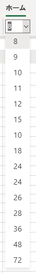

こんにちは、Office サポートです。
本記事では、Microsoft Teams 上で Excel ファイルを開くと、フォント サイズのプルダウン メニューが正しく表示されない事象について説明します。
2020/3/17 Update
修正が公開されたため、原因および回避策を更新しました。
現象
Microsoft Teams 上で Excel ファイルを開くと、フォント サイズのプルダウン メニューが正しく表示されない事象が発生する場合があります。
例えば、以下のように表示されます。

原因
この現象は弊社製品の問題であり、修正が行われました。
回避案
修正適用後、現象は解消します。
または後述の対処をご確認ください。
<Excel Online で開く>
該当のファイルを [・・・] - [ブラウザーで開く] (または [開く] - [Excel Online で開く]) で開きます。
または、SharePoint Online や OneDrive for Business など Teams 以外の場所で Excel ファイルを開きます。
新たな情報が確認された場合には、この記事に追記する形で公開していく予定です。
本情報の内容 (添付文書、リンク先などを含む) は、作成日時点でのものであり、予告なく変更される場合があります。